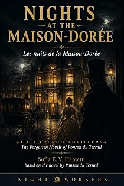

Les Nuits de la Maison-Dorée
A novel of Second Empire Paris
by Pierre-Alexis Ponson du Terrail · translated by Sofia E. V. Hamettpar Pierre-Alexis Ponson du Terrail · traduit par Sofia E. V. Hamett
The bookLe livre
Rain, a deserted boulevard, every shop shut, and midnight striking in a private room at the Maison d'Or where two young men sit facing each other across a table. Raymond is tall and fair; Maxime is not. Between them they sum up the type of the young man of good family to perfection — which in Ponson du Terrail is never a compliment.
La pluie, un boulevard désert, toutes les boutiques closes, et minuit qui sonne dans un cabinet particulier de la Maison d'Or où deux jeunes gens se font face à une table. Raymond est grand et blond ; Maxime ne l'est pas. À eux deux, ils résument à la perfection le type du jeune homme de bonne famille — ce qui, chez Ponson du Terrail, n'est jamais un compliment.
From the opening pagesLes premières pages
Supper for Three
It was raining. The boulevard was deserted, the shops all shut.
Midnight was striking on the clock of a private room at the Maison d’Or, where two men sat facing one another across a table. Both were young, both well dressed, both easy in their manners; between them they summed up the type of the young man of good family to perfection. One was called Raymond, the other Maxime. Raymond was tall, blue-eyed, fair-haired, with a small foot and a long fine hand. Maxime was dark, of middle height, slim as a creole from Bourbon, white and pale as a Muscovite.
The table in front of them was laid for three. The red shrimps and the pyramid of crayfish had not been touched, the old médoc had not been uncorked, the champagne was waiting in a bucket of iced water. Neither of them, evidently, meant to pick up a fork before the third guest arrived.
Every few minutes Raymond got up, opened the window and leaned out, indifferent to the fine soaking rain that glazed the asphalt of the pavements. “Nothing,” he murmured. “Nothing — only my coachman asleep on his box and yours reading an evening paper by the light of a street lamp. Antonia isn’t coming.”
Then he would come back and sit down opposite Maxime and relight his cigar at one of the candles on the table.
“Look here, my dear fellow,” said Maxime, as Raymond announced for the third time that Antonia was not coming, “are you out of your mind tonight?”
“Me?”
“Certainly.”
“Why do you ask?”
“You’re young, you’re good-looking, you have 50,000 francs a year, you pass for one of the men in fashion — and you want me to believe Antonia isn’t coming?”
“Perhaps she doesn’t love me any more.”
“What an innocent heart,” murmured Maxime. “A man with 50,000 francs a year is always loved.”
“You think so?” And Raymond gave a sad smile.
“But what possessed you,” Maxime went on, “to invite us here tonight — me, your oldest friend, and her, the woman you love — to a snug little supper in a restaurant, like a pair of students who have just drawn their monthly allowance and want to dazzle a couple of shopgirls?”
Raymond went on smiling and said nothing.
“Haven’t you a charming little house of your own at the top of the faubourg Saint-Honoré?” Maxime continued. “And hasn’t that dining room of yours, hung with leather, furnished in old oak, with an Oriental carpet on the floor, brought us together often enough that the idea of taking us out to a restaurant should never have crossed your mind? Because you understand, my good friend, I’m not attacking the cooking in this place — it’s good — nor the velvet on the sofas, nor the blaze of the candles. But when a man belongs to the Jockey Club, as we do, when he keeps thoroughbreds and hand-picked mistresses, he doesn’t go behaving like a solicitor’s clerk taking some tart out to supper on the boulevard at night.”
“Stop there,” said Raymond. “I accept the reproach. But what would you have? I sold my house this morning.”
“You’re dreaming.”
“No. I made an excellent bargain. You know the rage just now is all for speculating in land.”
“True enough. Then why not have supper at Antonia’s? She has a pretty chalet out by the Bois.”
“True. But —”
The sound of carriage wheels interrupted him. He got up quickly and, for the fourth time, went to the window. A low brougham had just stopped at the corner of the rue Laffite, opposite the little door of the restaurant, and a woman had sprung out on to the step in a single movement.
“It’s her,” said Raymond, and his face lit up.
A minute later, sure enough, the door of the private room opened and the woman stood there in front of the two young men. She might have been twenty-three. She was beautiful the way a heroine in a novel is beautiful; she had the grace of the lady of a castle out of Walter Scott. Dark as a girl from Andalusia, white as an Englishwoman, slim and supple as an Indian, Antonia was one of those women whose glance works a fatal charm, whose love turns a man’s whole life over the way a storm turns over and flattens a field of wheat on the eve of the harvest.
“Antonia, my dear,” murmured Raymond, taking her hands, “I was afraid you weren’t coming.”
She looked at him with a half-mocking smile. “But sultan of my heart,” she said, “do you realise I have never once kept you waiting?”
“That’s true. But —”
“It was raining, wasn’t it.”
“Exactly. And then — and then —”
“You’re a fool,” she said. And she threw round his neck two arms as white as alabaster and brushed his forehead with lips redder than cherries in June. “Come along,” she said, “let’s sit down. Good evening, Maxime; put yourself next to me — there, on my right. I’m hungry.”
And she sat down. Raymond was still smiling, but he was unhappy; there was a cloud on his face.
“Oh, this Raymond!” cried Antonia, going at the pyramid of crayfish with her pink fingers. “He’ll be the strangest man alive as long as he lives.”
“You think so?” said Maxime.
“My word, this supper is proof enough of it.”
“That’s exactly what I was telling him a moment ago.”
“Was it, indeed.”
“Hush, my friends,” said Raymond. “This supper has a mysterious purpose.”
“Oh, come.”
“A philosophical purpose, even.”
“Do be quiet, Raymond,” cried Antonia. “The word philosophy sends a chill down my back.”
“Why, my dear?”
“Because I once had a friend who lived in absolute poverty — the poverty of a dethroned king, or of a poet — and who said every other minute, Never mind, I’m a philosopher.”
“Very well, I shan’t use the word again. Only —”
“Only,” said Maxime, “you’re going to explain to us why we are having supper here.”
“Because I have something to tell you both. You, my friend; and her, the woman I love.”
“Good,” said Antonia, showing her white teeth in a smile. “Now Raymond is going to turn sentimental.” And she poured herself a glass of champagne.
“Perhaps. But in any case, before I tell you,” said Raymond, “I’m going to ask each of you a question.”
“Let’s hear it,” said Maxime.
“Right. I’ll start with you. What is friendship, my dear fellow?”
“Being two men with one purse between them, one sword and one pen; and loving two women — which is to say, never poaching on each other’s ground.”
“I like your definition, Maxime. Now you, Antonia.”
“What do you want to know?”
“What is love?”
“Two mouths meeting in a kiss, two hearts with a single beat between them, two breaths mingling, two souls so stupefied with happiness that they have become one single instinct.”
Raymond gave a cry of joy and held out both hands, one to Maxime and one to Antonia. “Forgive me for having doubted you,” he said.
“You doubted —”
“Yes. You, my dear Maxime, who were my friend at school before you were my friend in the world; and you, my good Antonia, at whose knees I have lived so happily for three years.”
The excerpt ends here — about 1,233 words of the published edition.L'extrait s'arrête ici — environ 1,233 mots de l’édition parue.
KindlePaperbackBrochéContextContexte
Rocambole made Ponson du Terrail famous and then swallowed the rest of his work. He wrote dozens of other novels — the Second Empire demi-monde, forest melodramas, police memoirs, Regency intrigue, Orientalist serials — and almost none of them survived in English. Lost French Thrillers recovers them, in the order they can be edited, with the same care given to the Rocambole cycle.
Rocambole a rendu Ponson du Terrail célèbre, puis a englouti le reste de son œuvre. Il a écrit des dizaines d'autres romans — le demi-monde du Second Empire, des mélodrames forestiers, des mémoires de police, des intrigues de la Régence, des feuilletons orientalistes — et presque aucun n'a survécu en anglais. Lost French Thrillers les exhume, dans l'ordre où ils peuvent être établis, avec le soin donné au cycle de Rocambole.
The whole programmeTout le programme